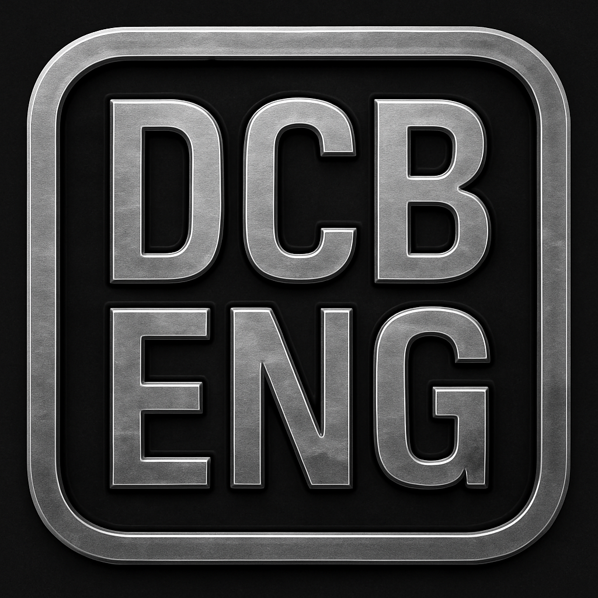

DCB ENG is a one-man custom fabrication shop based in Beauty Point, Tasmania. Specialising in bespoke welding and performance car fabrication. If you need custom work done right, I can make it happen.
Free steel fabrication calculators and browser-based engineering tools for workshop planning, metal cutting, pipe bending, branch templates and CNC DSTV (NC1) file preparation.
Convert supported 3D STEP steel sections and flat-plate STEP or DXF geometry into DSTV (NC1) files for CNC steel processing. Inspect the model, check section orientation and review the generated output in your browser.
Supports selected RHS/SHS, PFC, angle and I-section geometry, plus flat plates within documented limits. Files are processed locally in your browser, without uploading them to a server.
Experimental software. Check output and machine compatibility before production use.
Optimise steel cut lengths against mixed stock sizes and available quantities. Visualise stock bars, account for kerf and clamp allowances, reuse offcuts, and export a cutting plan as CSV.
Runs locally in your browser, with no workshop database connection or file uploads. Mitred cuts are conservatively treated at their full length in this preview.
Planning preview only. Confirm dimensions, orientations and machine requirements before cutting.
Calculate weight for RHS, SHS, CHS, angles, channels, beams, columns, flat bar, round bar and plate using profile, size, wall thickness, length and quantity dropdowns.
See kg/m, individual and total weight, build a multi-section take-off and export the list to CSV. Runs entirely in your browser.
Nominal weights for estimating only. Verify against supplier data for lifting and load-rated use.
Calculate smooth pipe bends or segmented lobster-back elbows, with live dimensioned drawings, centreline bend allowance, individual mitre cut lengths and a CSV cutting list.
Choose CHS, nominal pipe Schedules or selected RaceTech motorsport tubing, and calculate springback using material-grade estimates or a measured trial bend. Includes rotary draw, hydraulic ram and compression bender profiles.
Geometric estimates for fabrication planning. Verify cut lengths, bend tooling and fit-up before production.
Develop CHS branch saddles and matching main-pipe openings, including custom angles, lateral offsets, set-on and set-through joints, wall thickness and weld preparation references.
View the live 3D intersection, then print full-size tiled A4 or A3 templates. Export PDF, SVG, DXF and CSV directly from your browser.
Workshop reference geometry. Verify printed scale, fit-up and cut details on a test piece.
Lay out two-bend and tapered four-bend main hoops from available width, roof, shoulder and height measurements. Calculate tube cut length, bend angles and start, centre and end bend marks.
Add a diagonal brace, rear stays, a harness crossbar between the stays and side intrusion bars from the main hoop to measured front points. Set independent CHS sizes, view side/plan layouts, export member cutting lists and print labelled upper/lower diagonal fishmouth wrap-around templates at 1:1 scale.
Geometric workshop planning only, not a certified cage design. Verify motorsport regulations, bender calibration and physical fit-up; STEP export is not yet available.
Calculate missing lengths and angles for right-angle or angled steel frames. Check rectangle diagonals against a tolerance, or set out square corners with a 3–4–5 triangle.
Enter two lengths or a known length and angle. Includes a live dimensioned sketch, with metric millimetres throughout.
For workshop set-out and drawing checks. Verify measurements and reference points before fabrication.